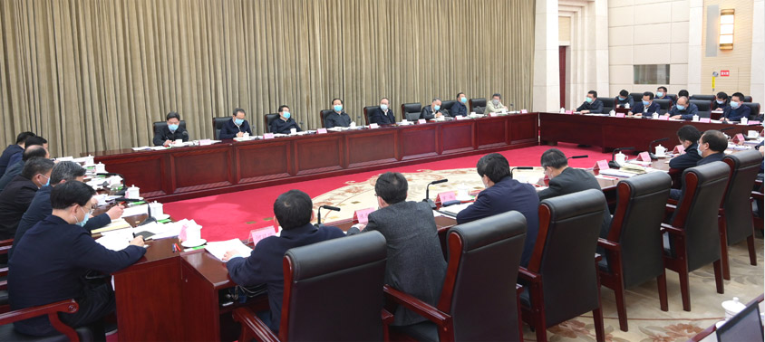
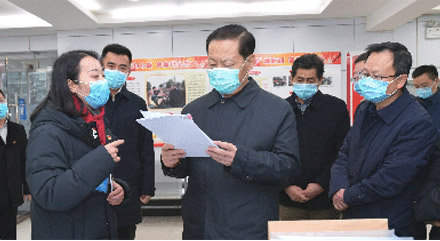
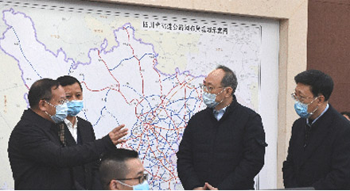

疫情就是命令，防控就是责任。省委、省政府坚决贯彻落实习近平总书记系列重要指示精神和党中央、国务院决策部署，闻令而动、快速出击，立足全国“一盘棋”，织密省市县乡村的联防联控“一张网”，开展全方位的人力组织战、物资保障战、科技突击战、资源运动战，率先实施差异化防控策略，科学阻断病毒传播链条， 统筹推进疫情防控和经济社会发展。
建立统一高效的指挥系统

省委成立应对新型冠状病毒肺炎疫情工作领导小组，省政府设立应急指挥部并下设13个工作组（专班），全面加强统一指挥，同时间赛跑、与病魔较量，有力有效开展防控工作。


省委书记彭清华检查督导社区疫情防控工作

省委副书记、省长尹力督查疫情防控和交通运输保障工作